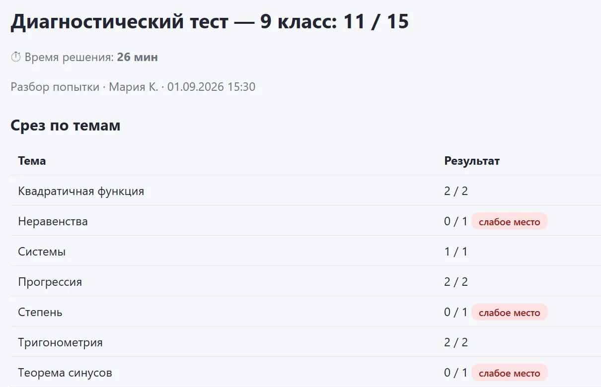

😢
Домашняя работа превращается в слёзы
Вечера уходят на одну задачу, а объяснения из учебника не помогают.
Репетитор по математике · онлайн
Готовлю к ОГЭ, ЕГЭ и ВПР, закрываю пробелы школьной программы. Объясняю так, чтобы ребёнок понял предмет и перестал его бояться.
Вечера уходят на одну задачу, а объяснения из учебника не помогают.
«Я гуманитарий», «математика — не моё». На самом деле просто накопились пробелы.
До ОГЭ или ЕГЭ осталось несколько месяцев, и непонятно, с чего начать.
Тему прошли, перешли к следующей — а прошлая так и осталась непонятой.
Это решаемо. Чаще всего дело не в способностях, а в двух-трёх темах, которые когда-то были пропущены. Я нахожу их на первом занятии.
Познакомимся
Меня зовут Анна. Уже 7 лет я помогаю детям понять математику и перестать её бояться. Работаю на собственной платформе со своими тестами и интерактивной доской.
Как проходят занятия
45 минут: знакомимся, ребёнок проходит диагностику по всем темам своего класса. Сразу видно, где пробелы.
Строю план не «по учебнику подряд», а по слабым местам и цели: оценка в четверти, ВПР, ОГЭ или балл ЕГЭ.
Объясняю на интерактивной доске: графики, чертежи, разбор задач. Между уроками — домашние задания и тренажёр.
Регулярные тесты и пробники показывают рост. Раз в месяц родители получают отчёт: темы, домашние задания, результаты.
Своя платформа подготовки
Я веду в ней каждого ученика: от первой диагностики до экзамена. Вам не нужно ничего устанавливать — я показываю всё на занятии и присылаю результаты.

Проверяю все темы класса и сразу вижу слабые места. План занятий строится по ним.
Скриншоты программы · пример на условном ученике
С чем помогаю
Дроби, уравнения, геометрия — закрываем пробелы, пока они не превратились в проблему. Готовимся к контрольным и ВПР.
Разбираем все типы заданий, тренируем первую часть до автоматизма, учимся оформлять вторую. Регулярные пробники.
База и профиль. Системно проходим темы экзамена, отрабатываем задания на время, следим за баллом от пробника к пробнику.
Стоимость
Частые вопросы
По видеосвязи, один на один. Я объясняю на интерактивной доске: строю графики, рисую чертежи, разбираю задачи по шагам. Ребёнок видит и слышит всё так же, как за партой, только из дома.
Компьютер, ноутбук или планшет с интернетом, тетрадь и ручка. Устанавливать ничего не нужно.
За 45 минут мы познакомимся, ребёнок пройдёт диагностику по темам своего класса, а я покажу, где именно пробелы и с чего стоит начать. Это бесплатно и ни к чему не обязывает.
Обычно 1–2 раза в неделю. При подготовке к экзамену лучше 2. Точный график подберём после диагностики — он зависит от цели и количества пробелов.
Раз в месяц вы получаете отчёт: какие темы прошли, как выполнялись домашние задания, какие результаты тестов и пробников. Прогресс виден в цифрах, а не на словах.
Нет, с этого начинают многие. Я иду от простого к сложному, а тренажёр подбирает задания по силам — у ребёнка появляются первые победы, и страх уходит.
Напишите мне — подберём удобное время для бесплатного пробного занятия.
Обычно отвечаю в течение дня